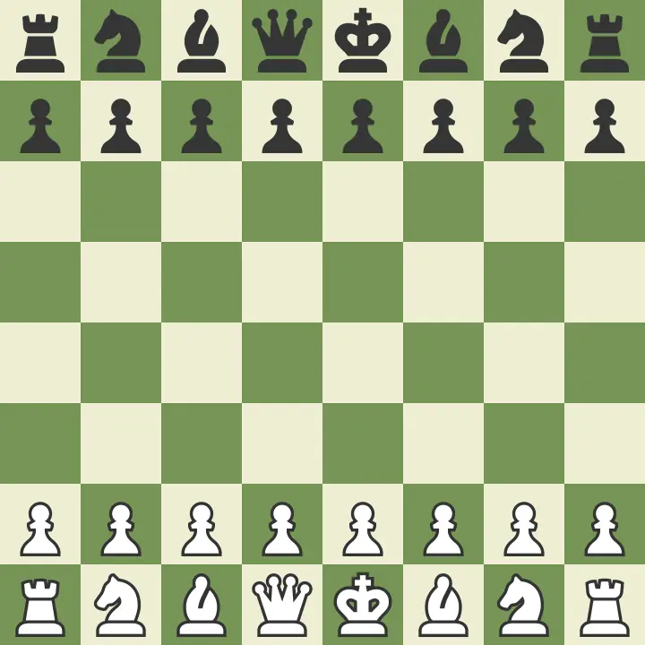
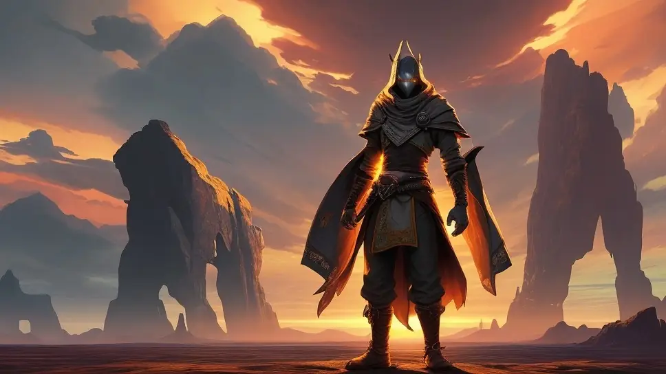
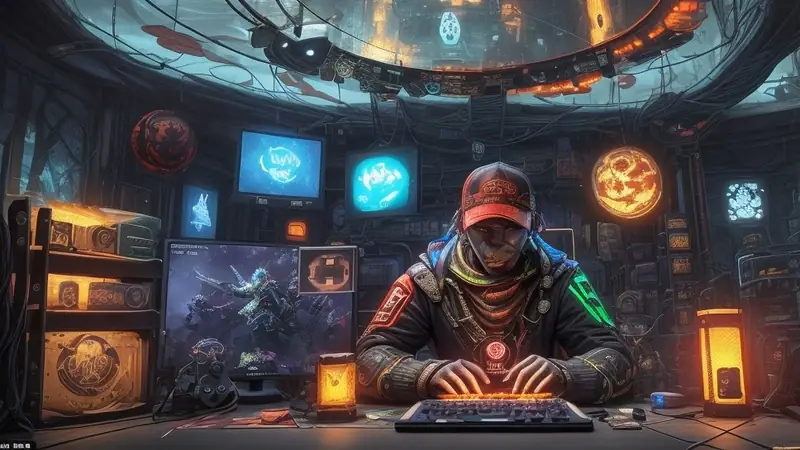
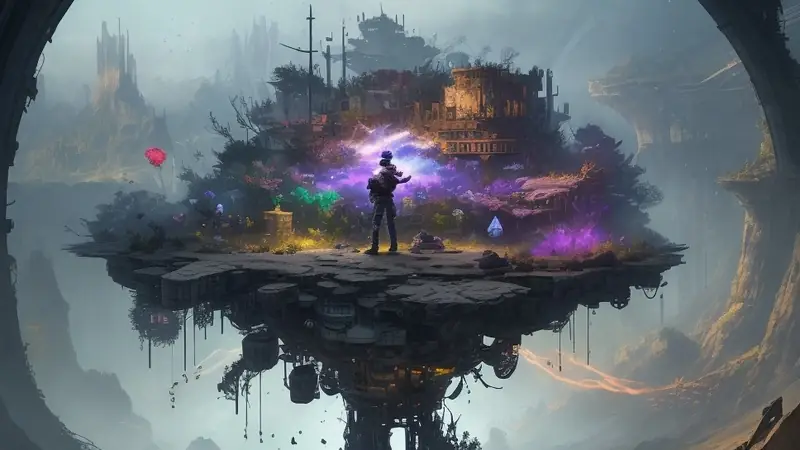
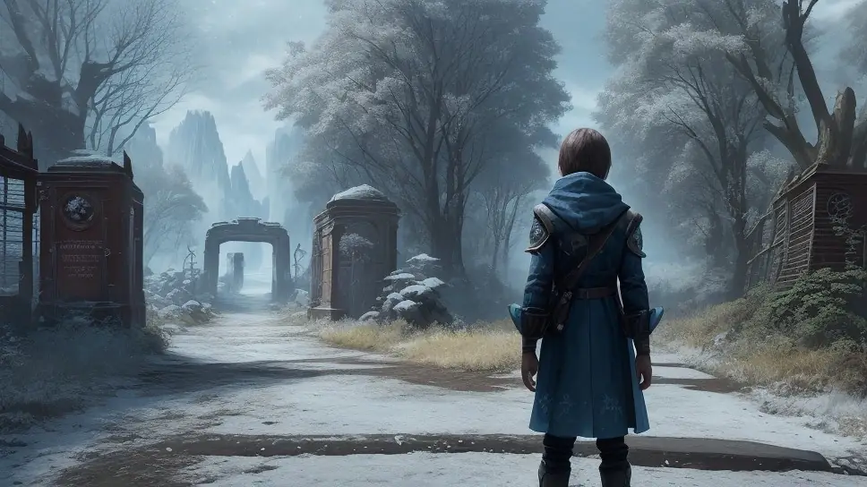
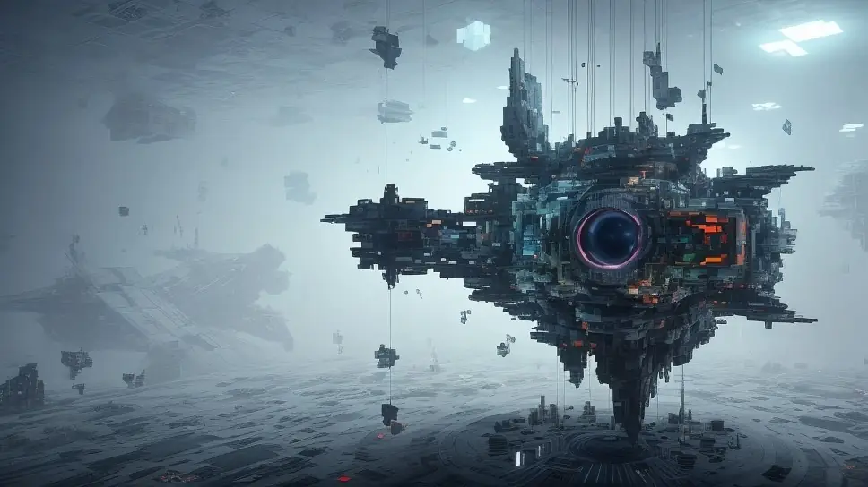
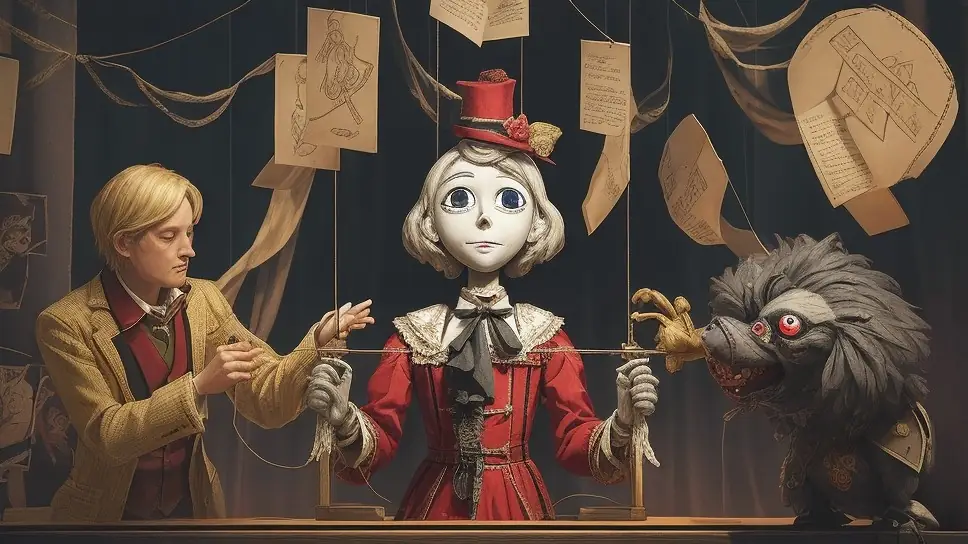
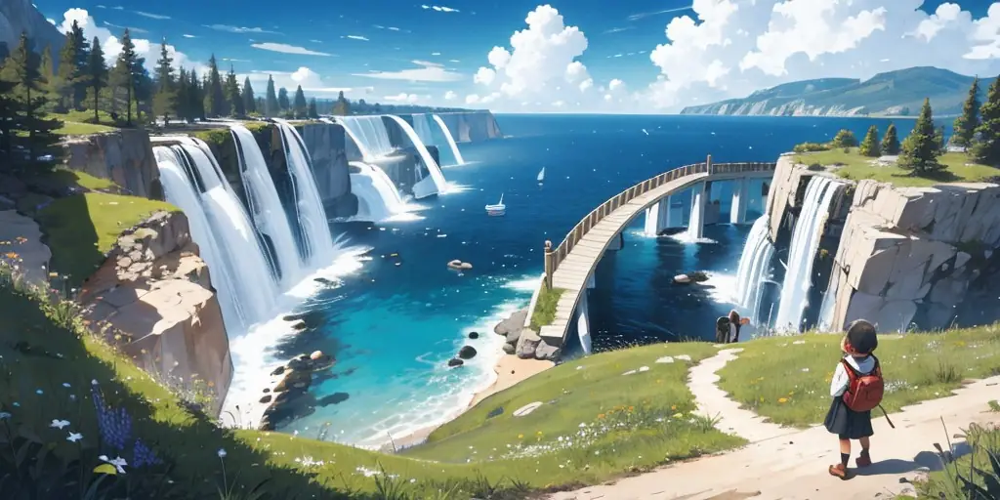

Infinite Metagame, what is that and why?
More often than not most games are built with a finite metagame structure - it starts a specific way, it has a certain progression, it ends. Once it ends, everything is no longer valid so the only option is to reset everything back to the starting condition.
Think of how most board games are played until victory is achieved, then everything is put back into the box and that session is gone forever. The only option is to start a new session, start over from the beginning again.

Like chess, the board always has 2 rows of units on both sides and the game ends once a checkmate is achieved. Playing the game after that point is no longer possible without restarting from the beginning again.
If you're new to gaming or the fun of the game doesn't come from the game itself but the dynamics around it (playing with friends, playing it as part of an event, etc.), this probably will not bother you.
Similarly, if a game is story-driven and exists to merely inspire, convey a message or be a very specific 'theme park ride' type of experience, then again it probably won't bother you, especially if its relatively short and you didn't have invest too much time and effort in learning the game to complete it.

However, if you're like me who's already played a lot of games, seen a shit ton of inspiring stories and now have a desire to go out there do cool things myself with my own style and expression instead of being a passive spectator again…

...and also have grown into a more advanced gamer that demands more depth from the games I play, to the point of wanting to really commit to one particular game to truly master it and have it feel truly meaningful, instead of having to relearn all the rules again and again with each new game, having to flush down the toilet all skills, muscle memory and experience gained in the previous games I've played... only to learn yet another set of equally useless skills that will have no value as soon as this new game ends too...

...and also feel a strong desire to continue playing a particular game that had really enjoyable mechanics, systems, features and content... but the metagame in it was finite, structured in such a restricting and limited way that it cut the game off abruptly and reset everything, just as I felt I had gotten warmed up and wanting to play more of it...

...or wanted to see a game get new updates and more content, but its story and metagame structure made it impossible for it to continue past its conclusion, resulting in a dead end I wished would have kept going for a bit longer.
An infinite metagame structure combined with a certain way of handling and organizing game content could revolutionize and result in a game that can keep going without there ever needing to be an "end" to it.
To me, it is a very exciting, real solution to the frustrations I just mentioned above.
The idea is that there is no ultimate end point, a final goal or a moment where the game has to reset. I could instead keep playing it virtually forever, with all my progress and achievements still being valid and accessible as long as I don't lose my persistent save file or manually reset the game for whatever reason.
The term 'metagame' could be translated as "the way a game is structured", or in other words how it is organized, how it begins and how it flows. The ‘game’ itself - the actual moment-to-moment experience - is basically something that happens through the metagame as a medium.
As such, the 'metagame' is essentially a wrapper/container for the 'game', giving it meaning, a storyline, dictating how and when things happen from a narrative point of view. A metagame ties it all together as a complete experience.
How would an infinite metagame even work? Isn't endless gameplay meaningless without a narrative?
It's worth pointing out that an infinite metagame only makes sense if the enjoyment of the game can be derived directly through its mechanics; as in, I'm not playing to learn something or hear out a story, I'm mainly there because I love the interactive aspect of it, whatever it may be - driving, combat, building, solving puzzles, exploring, experimenting, relaxing or fooling around.
Some games have both an engaging hand-written story but also include satisfying game mechanics that stand well on their own. It's often a shame when the story ends and I cannot continue playing with its fun mechanics beyond the rigid pre-built scenarios that the original scripted campaign provided, even though the potential was clearly there and it wouldn't have needed anything more than a bit of freeform randomization to enjoy those fun mechanics in new ways past the scripted story content.

Regardless, it is true that scripted story driven narratives do provide meaning, structure and progression to the game, making it feel meaningful. The common argument is if those are taken away, then the game has no context and feels hollow, pointless and aimless without a scripted narrative. This is true and I don't deny that.
It is also true that scripted narrative content is hand-made by a human and therefore is always going to be finite by their very nature. Writing creative scripts and doing all this scripted content work manually is slow, exhausting work.

Scripted content also has the problem of only yielding rather one-sided content, often lacking in emergent potential to break away into situations beyond the scope of what the content author managed to write in.
Every new branch in a storyline would have required the content author to make each branch individually and manually, creating a horrifying amount of workload that no human can keep up sustainably.
Technically nowadays it may be possible to create a game where an AI-driven Large Language Model a la chatGPT creates a new narrative on the fly, but honestly this isn't necessary.
Besides, they'd be quite overkill too because those Large Language Model AIs require crazy high system requirements (a big expensive computer with very high end components, yikes!) which would drain processing power and memory that the game itself would need to run smoothly!
Meanwhile, cloud computing isn't cheap either and would still require a constant internet connection. Otherwise that particular AI driven storytelling feature will not work.
But anyway, a narrative is still important and no gameplay will feel meaningful without it to keep playing the game.
This is what this article is all about; to show you how to set up a narrative for an infinite game to keep it meaningful and never needing to reset the game each time you play it.
The winning combo - An infinite overarching goal and a finite local goal
To make an infinite game work, it requires an infinite reason to play it. Yet at the same time, the goal of the game has to be attainable and possible to complete/finish to make it feel like it matters.
What I discovered was to have two layers that make it work; an infinite overarching goal and a finite local goal.
Infinite Overarching Goal
The infinite overarching goal is something that gives context and an ongoing general narrative to the player. It basically tells what role or mission the player is doing, what their profession or occupation is, who they are and why they are doing whatever they are doing. It also describes the world and your impact in it.
But as a goal, the infinite overarching goal isn't directly attainable - it's always ongoing. It pushes the player forward on a general level, mainly giving the player a general direction to follow.
Some examples of an infinite overarching goal:
- You run a postal service, sorting and delivering mail from all kinds of interesting, quirky and colorful individuals, seeing their reactions in the process.
- You are a space explorer, charting out the cosmos, recovering artifacts, samples and helping scientists back home to advance your civilization.
- You manage a city's sewer maintenance team, clearing out blockages, extracting animals and things that don't belong there and keeping the thing running while encountering wacky weird stuff.
- You hunt alien monsters to control their population and allow for other species to remain in balance, keeping the ecosystem stable.
- You fix broken machines and help people regain lost abilities to make their lives better. You design starships for all use cases.
- You are responsible for ensuring that not only people can achieve what they need but also do it with quality and safety. You are a rebuildable robot in a gladiator fight to entertain people.
- You are a roaming skateboarder, painting the city to delight the citizens and improve their mood.
- You research magic and alchemy, hoping to create spells that help transform the world around you in odd yet useful ways.
- You run a demolition company that cleans up expired buildings while providing a cool show to entertain people.
- You are a rockstar cyborg mercenary for hire, in it for the thrill of combat. Your battles accumulate money and fame that you can use to invest into communities to improve them.
- You operate an interstellar mining corporation helping your civilization prosper by running a sustainable business and watching awesome procedural megastructures get built in space.
Notice how each of these essentially has the player "perform a service to someone/something" and "create some kind of benefit to someone/something".
If you think about it, working as a professional or as a company is an infinite task; clients will keep coming to you and you will keep helping them, it doesn't truly ever end. You may retire or the business may relocate elsewhere, expand or shrink due to circumstances, but as long as there are people, you'll never run out of clients to serve.
And if it isn't you, someone else may continue in your footsteps; either as an outside inheritor, as your offspring/family or as a random maverick that branches off in a different direction than how the original business did things.
Context wise this is a perfect fit for an infinite game. This narrative contextualization makes sense, feels natural and is vague/general enough that you can effectively have a lot of wiggle room for the types of events that can happen during the game.
The best part is that it benefits from connecting with one of the most powerful and satisfying feelings in this world; seeing your actions successfully result in someone else's happiness.
It should go without saying, but that "customer reaction" thing is something that should be implemented as a proper feature/system/mechanic as part of the infinite overarching goal to actually make it meaningful. Giving feedback to the player through these "clients/beneficiaries" - whatever shape or type they may be - is absolutely vital, a must have.
Finite Local Goal

Meanwhile, the finite local goal is often a very clear task that has a definitive 'start-progress-end' structure. It's always unique, always targeted and always possible to finish fully.
The infinite overarching goal essentially acts as a factory for finite local goals, creating bite-sized sessions that have a clear structure, clear progression and a clear end point, marking that finite local goal completed on this endpoint is reached.
Finite local goals can also be nested on multiple levels:
- Campaigns: Do a major multi-stage task generated/spurred by the infinite overarching goal.
- Mission/Quest: Do a multi-step task within that campaign.
- Objective: Do a single-step action within a mission/quest.
Some examples of finite local goals (on different levels of scale, based on the 'postal service overarching goal'):
- Campaign: [A major holiday] is approaching and the postal office is [flooded with packages and postcards]. You must [get all these sorted out and delivered]!
- Quest: [One sender] arrives at the office wearing [a trenchcoat and shades], the [fork] they want to send seems to be [made out of jelly]. Help them [package their item so it will reach its destination unharmed]!
- Objective: Gather information by [asking the sender] whom they want to send it to.
- Objective: Investigate what the [properties of the jelly] are so you know what packaging material or solution to use. Objective: Use packaging material [type-B] to wrap their [fork] without [risk of jelly leaking out].
- Objective: Move the ready package to the correct sorting chute and inform the sender of a task completed.
- Objective: Load all packages onto the truck, be careful not to damage any.
- Objective: Drive to delivery location and drop the package to its intended destination. (Quest completed, do this with multiple other clients or special situations that might occur during this campaign. Once X amount of quests are done, the Campaign is completed.)
In the end, the game looks and feels like it's a typical narrative singleplayer campaign structure, except those campaigns are procedurally generated, along with the missions/quests and their objectives.
Unlike hand-made campaigns, an infinite metagame can generate an infinite number of campaigns, each one completely different, varied and randomized to such a degree that every campaign will be an exciting, surprising, fresh experience; you have no idea what you'll run into and in what configuration it will be in.
In terms of length, each campaign can last as long as a typical 10 hour singleplayer campaign or as short as 10 minutes. A Quest is usually a fraction of that time and an Objective will obviously be shorter than a Quest.
Example: (Campaign: 10 hours - Quest: 1 hour - Objective: 10 minutes, +/-)
As an experience, the player would play a campaign or a quest within a campaign as a "session" where during the day when they have free time to sit down and play a game for 10-60 minutes to get a satisfying experience, having a clear starting point, clear progression and a clear finishing point.
Later, either tomorrow or after a week, they can keep returning to the game to continue playing it, now presented with a newly generated campaign, quest and objectives where they can engage with the satisfying game mechanics they love to fulfill their fundamental human need that the game was built to serve to the player, be it empowerment, stress relief, excitement, relaxation or whatever else.
But unlike a traditional finite game, the narrative context will never expire, never lock you out, never restrict you from playing the game in a different way compared to the first playthrough or otherwise make it impossible to continue after you reach the “end” of the campaign.
We need more games that do this, it's only a matter of how it's organized/structured which isn’t any harder than how games are programmed or built overall.
Talk about it
Questions, disagreements and ideas of your own are all welcome. Discuss this article with other readers on the Reactorcore Games Discord, follow new articles and dev news on Patreon, or write to me directly.